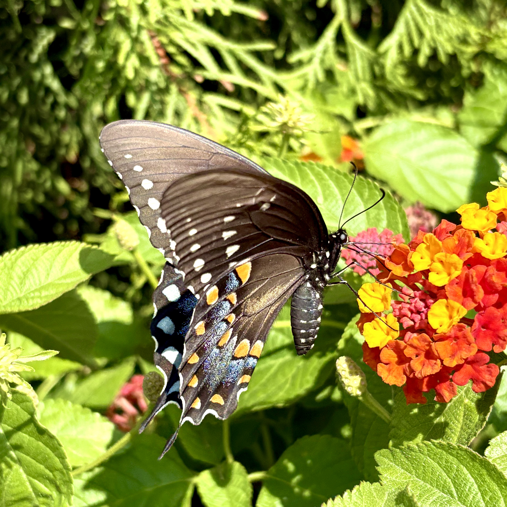

Growing Into Honor: My Reflection of Fall 24 - Spring 25
Prompt: What specific experiences (honors or otherwise) in the past year have had the most impact on your personal, academic, or professional goals and life trajectory? Which future experiences will further encourage this growth? Please articulate specific academic and/or professional goals for the next year, including how you hope to continue developing your skills, strengths, and areas of professional interest.
According to my manager at the minimum-wage job I'd worked at for the duration of this year, it's almost a rite of passage for second-year students in college to hold a job through their studies. And that's where my story begins; in an interview mere days before my first day in a new major entirely. Little did I know that I was sitting across from the very person who would give me the most difficulty throughout the second year of my college life. My first year of elementary education ultimately wouldn't be marked by the learning I'd done in the classroom, but where I'd put it to the test.
Now, you may be wondering how one would apply their teaching skills to hungry customers. In short – you don't. The customer came for food, not a lecture! In long, my first year of elementary education wasn't so much about teaching, but rather communication skills and ethics. It's the year that sets the standard for what communication and attitudes are expected moving forward, both between colleagues and within the classrooms we'll be leading. And I believe that what I was taught should be an expectation for most people: we all should be striving to meet people where they're at, and hear people out even if they seem a little rude.
It was this perspective that set me apart from every other person who worked at my job. When other employees were snarling at the customers who didn't tip them, I understood that even if the customer didn't have extra money to give, they were still grateful to us. When we ran into customers that were especially difficult, I would hear out their rants and empathize with their plights. I always sought to meet the customers where they were at. Unfortunately – this went largely unnoticed by my manager, because when it got busy and came down to the line, they'd rather chuck a burrito at me than finish their customer's order.
Although I could brush this moment off as the momentary lapse in judgement that it was, this was the moment that left me wondering how being kind to people wasn't the norm. How others couldn't keep their cool the same way I could through difficulty. I realized the value in what I was learning, and what I'd eventually be doing for society. I was one of the few patient people out there willing to devote my life to teaching our youth. There weren't as many people with my amount of patience as I thought there were. This workplace hostility would only worsen the longer I stayed there, but I believe it's what has given me the understanding I have today. I don't even necessarily fault them for doing what they did because I know people do and say things they don't mean in frustration.
Ultimately, from the job I'd worked all throughout my second year of college, I learned that there's truly no environment without some amount of chaos. It's how you handle the chaos that says the most about your character. Snarling and throwing burritos at your problems doesn't get you anywhere, but a smile and a mind set on change for the better does. As a teacher, I want to use this experience in work and more to ensure that I'm doing everything I can to make the best possible decisions for my classroom. And over the next year, I'm hoping to find more work experiences pertaining to working with our youth, so that I can grow my skills as an educator, beyond simply being understanding of people.